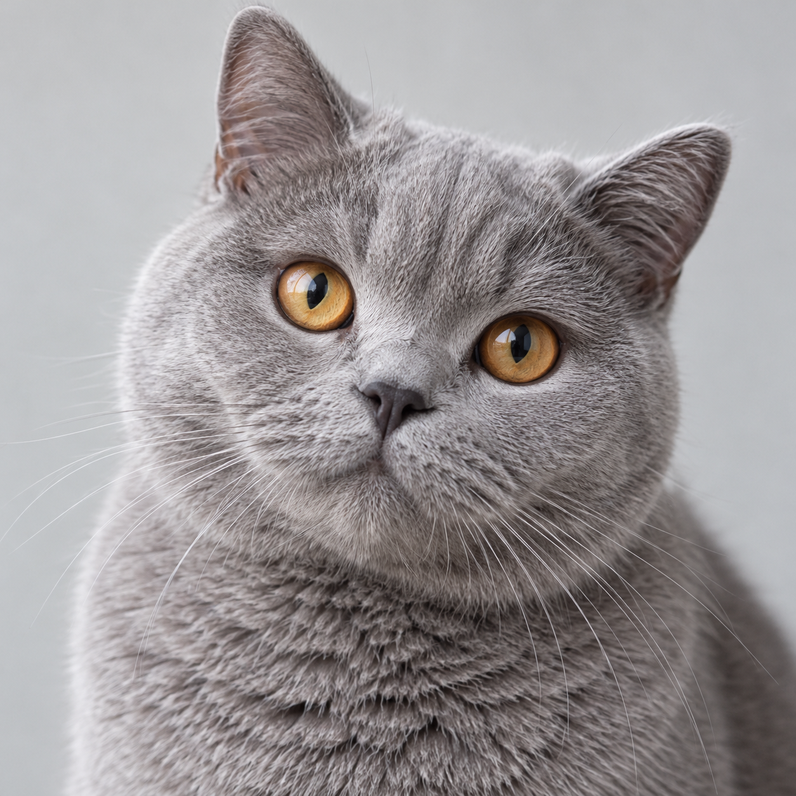

麦麦的一天
比昨天，多陪它一会儿
日一二三四五六
第 128 天0分钟陪伴
320 g主粮 · 本页示例
68 g蛋白 · 示意读数
1.1 L饮水 · 本页示例
晚饭还没喂
已超时1小时
目标 19:00 · 现在 20:10

活动时长
点击一天，看看它的小日常
所有记录仅保存在本页 · 不提供健康建议
比昨天，多陪它一会儿
320 g主粮 · 本页示例
68 g蛋白 · 示意读数
1.1 L饮水 · 本页示例
目标 19:00 · 现在 20:10

点击一天，看看它的小日常
所有记录仅保存在本页 · 不提供健康建议